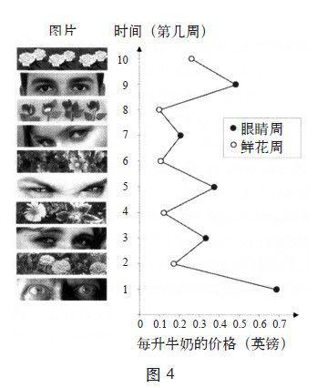

你会自觉投到盒子里多少钱？
我们原以为自己作出的判断和选择是有意识且自主的，但那些关于启动效应的研究所带来的发现却颠覆了我们此前的认识。例如，我们中的大多数人都认为投票选举是经过深思熟虑的行为，它反映了我们对政策的认可程度与评价，不会受到不相关的事的影响。比方说，我们投票不应受到投票地点的影响，但事实上这个因素却实实在在影响了投票结果。一项关于2000年亚利桑那州选区投票模式的研究表明，当投票站设在某个学校时，加大教育投入力度的议案的支持率就会比投票站设在附近其他地方的要高。还有一项实验表明，当人们看到一些教室和学校储物柜的照片时，他们往往也倾向于支持关于教育的提案。这些图片对这些受试者的影响比其家长或其他选民与他们的意见分歧对其产生的影响还要大！对启动效应的研究从最初的实证研究—人们想到“年老”走路就会变慢—到今天已经取得了一定的发展，我们现在已经知道启动效应会影响到我们生活的方方面面。
让人联想到钱的事物往往令人不安。在一项实验中，受试者看到一个列有5个单词的单子，按照要求，他们得在5个词中选出4个组成以钱为主题的短语（比如“高、一份、薪水、桌子、工作”可组成“一份高薪工作”）。其他一些启动想象的实验则更挑战人的领悟力，包括背景中出现一个与钱没有任何关系的东西，比如一张桌子上放着一堆仿制钱币，或者一台电脑的屏保是水里漂着的一些美钞等。
起初脑海中就有钱的概念的人比自己没有这方面联想时更独立。他们会持之以恒地解决一个非常难的问题，付出双倍的努力也在所不惜，实在迫不得已时才会向研究人员寻求帮助。这一做法清晰地表明其自力更生能力的提升。脑海中总有钱的概念的人更自私：他们更不愿花时间去帮助另外那位假装对实验任务不大清楚的学生。当一位研究人员不小心将一捆铅笔掉到地板上时，脑子里想着钱的那些受试者（他们自己是无意识的）捡起的笔相对较少。在另一系列的一项实验中，受试者得知他们过会儿会和另一个人进行一次简短交谈，彼此熟悉一下，他们负责摆两把椅子，而研究人员则离开去找那个人。潜意识里有钱这一概念的受试者摆放椅子的距离（118厘米）会比没有这一概念的人摆放的距离（80厘米）更远。那些满脑子都是钱的受试者表现出更强烈的独处意愿。
上述所有发现有一个共同主题，即钱这一概念会滋生个人主义：不愿和他人在一起，不愿依赖他人，也不愿接受他人的请求。心理学家凯瑟琳·沃斯（Kathleen Vohs）完成了这项意义重大的研究，值得赞赏的是，她并未将自己的众多发现向公众和盘托出，而是留给读者更多的思考空间。凯瑟琳的研究意义深远，她的发现表明我们所处的文化环境中有很多能让人想起钱的事物，这些事物以我们意识不到的方式影响着我们的行为和态度，这些方式也许并不那么光彩。有些文化常常提醒人们尊重他人，另外一些文化则常让人们想起上帝，还有一些国家的人们会对着伟大领袖的照片顶礼膜拜。在一个专制国家中，到处挂着领袖的肖像不仅能向你传达“老大哥在看着你”①的感觉，还会使你逐渐丧失自主的思想和独立的行为能力。
启动效应的研究证据显示，使人牢记“人终将一死”这一说法能让独裁的主张更得人心，因为在人们恐惧死亡的情况下，独裁的主张会让人心安。其他实验证实了弗洛伊德关于无意识关联中符号和比喻作用的见解。比方说，你可以看看下面这两个不完整的单词W_ _H和S_ _P是什么。如果有人近些天想起了自己某个难以启齿的举动，这些人往往会把这两个不完整的词填成WASH和SOAP（“洗”和“香皂”），而很少会填成WISH和SOUP（“希望”和“汤”）。此外，只是想到背后中伤某位同事就会使人更想去买香皂、消毒剂或清洁剂，而不是去买电池、果汁或者糖果。当人们感觉自己的心灵受到了玷污，往往也会引发他们清洗自己身体的想法，这种冲动被称为“麦克白效应”。
人们清洗的身体部位往往是那些令他们深感罪恶的部位。一项实验要求受试者通过电话或者电子邮件对一位假想中的人“说谎”。在随后对不同产品的需求测试中，那些通过电话说谎的人更想要漱口水，而不是香皂；而那些通过电子邮件说谎的人更想要的则是香皂，而不是漱口水。
当我向听众阐述关于启动效应的各项研究时，他们的反应通常是将信将疑的。这也不奇怪，因为系统2认为自己掌控一切，认为自己知道为什么要作出这样或那样的选择。你的脑海中也可能会突然出现一些问题：对情境进行微调怎么可能产生这么大的影响呢？这些实验是否表明我们完全任由情境摆布，随时要听从它的指示呢？当然不是。启动思维的影响力虽强，但并不见得很大。在100位投票者当中，只有几位开始时并不确定要选谁，如果投票点设在学校里而不是在教堂里，他们对与学校相关的问题会就作出不一样的选择，但也不排除有那么几个人会作出相反的选择。
然而，问题的关键是要接受相关研究的结果，而不是对此心存怀疑。这些结果不是捏造出来的，也不是统计上的偶然现象。你别无选择，只能接受这些研究的主要结论是正确的这一事实。更重要的是，你必须承认这些结论对你自己来说也是正确的。如果你看到电脑屏保上有浮动的美钞，你帮那位笨手笨脚的陌生人捡起的铅笔数量可能比你没看到这些钱时更少。你不相信这些结论适用于你，因为这些结论与你的主观体验不相符，你的主观体验主要是由系统2决定的。启动效应来自系统1，而这个效应发生时，你根本就意识不到。
我用一个关于启动效应的完美展示案例来结束上面的阐述，这个案例是在英国一所大学一间办公室的茶水间进行的。多年来，这间办公室的职员一直都是自掏腰包买茶或咖啡，他们把每杯茶水和咖啡的建议价格写下来贴到墙上，上班时每次去接茶水或者咖啡时都会把相应的费用投到一个“诚实盒”里。某一天，有人在价格表的上方贴了张横条，上面既没有什么警告，也没作什么解释。在接下来的10周时间里，每周横条都贴有一张新的图片，图片上要么是一些花，要么是一双眼睛，好像盯着看着图片的人。没有人对这些新装饰发表过什么评论，但“诚实盒”里的钱却有了明显变化，如图4所示，这值得仔细研究一番。

实验开始的第一周（从图底端你可以看到相关信息），有一双睁大的眼睛在盯着来喝茶或咖啡的人，他们投进“诚实盒”的钱的平均值是70便士。第二周，图片上是鲜花，盒子中的钱的平均值少了15便士。这个趋势持续着，凡遇到有鲜花图片的那一周，盒子里的钱数就会减少。从平均水平来看，“眼睛周”时盒子中的钱是“鲜花周”时的3倍。显然，仅仅是一种象征性的监视符号便可促使人们改善自身的行为。正如我们预料的那样，产生这个影响的过程中没有任何意识的参与。现在你相信自己也难逃同样的模式了吧？
几年前，心理学家蒂莫西·威尔逊（Timothy Wilson）曾写过《我们是自己的陌生人》（Strangers to Ourselves）一书。现在你已经认识了自己身体中的那个陌生人，它也许在很多事情上都会为你做主，尽管你几乎从未察觉到它的存在。系统1带给你的各种印象经常会变成你的信念，而且是你作出选择和展开行动的动力源泉。它可以将当下的情形与新近发生的事情联系起来，再结合对近期的各种预期考虑，对发生在你身上或你身边的事作出心照不宣的解释。系统1包含了对这个世界的认知模式，能立即估测哪些事情是正常的，哪些是出人意料的，它是你作出快速直觉性判断的依据，且这种判断十有八九是准确的，而你的所有判断活动几乎都是在这一系统的指引下毫无意识地完成的。然而，系统1也是你直觉中很多系统性错误的根源，这一点将会在后面几章中得到佐证。
示例—启动效应
“这些人都穿着刻板的制服，看到他们时我们的大脑中是不会有什么创造性想法的。”
“这个世界比你想象的要复杂得多，能否对它有个清晰的认识多半要看你的大脑的工作方式。”
“他们的作用就是发现问题，而他们也的确发现了很多问题。”
“系统1编了一个故事，而系统2也相信了这个故事。我们每个人都有过这种体验。”
“我让自己微笑，这样做我也的确感觉好多了！”
① 语出乔治·奥威尔所著的《1984》（1984： Big Brother Is Watching You）。《1984》是奥威尔的传世之作，堪称世界文坛最著名的反乌托邦、反极权的政治讽喻小说。他在小说中创造的“老大哥”、“双重思想”、“新话”等词汇都已被收入权威的英语词典。“老大哥”其实是无处不在的权力的象征。——译者注